Game Design Researcher • Educator • Designer
Designing systems that make motivation visible
“But the whole burden of my teaching is that you ought to be idle.” — The Grasshopper
I’m a game design researcher and educator examining how the psychological needs of players can be satisfied in the absence of challenge. Drawing from Self-Determination Theory and Cognitive Evaluation Theory, my work explores how idle games sustain motivation and engagement through rapid progression, positive feedback, and freedom from failure.
Featured Work
Case Studies
Selected work in UX design and systems development.
Firebase Multiplayer & Analytics
Built a Firebase-based real-time backend to synchronize multiplayer gameplay and record player behavior across a week-long experimental study.
Burger Shack
Redesigned a mobile ordering flow to handle complex customization and allergen visibility without overwhelming users.
Games
Selected interactive projects and prototypes.
Academic Writing
Publications and dissertation work.
Pixel Art
GIFs and short animation pieces.
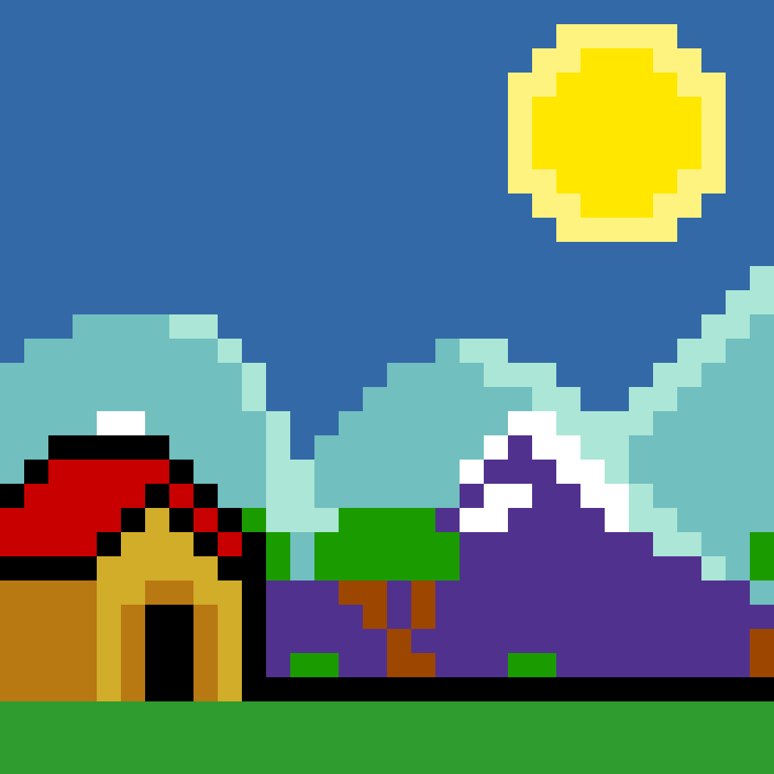
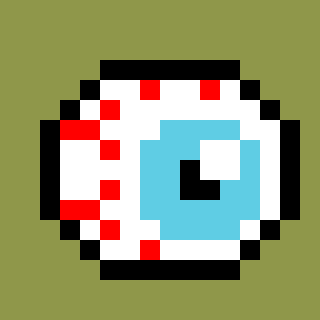
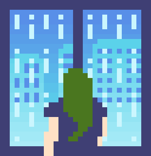
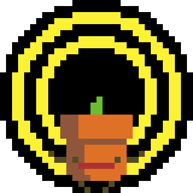
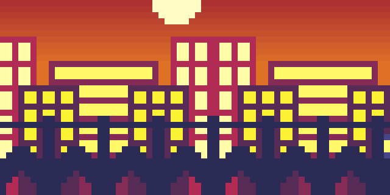
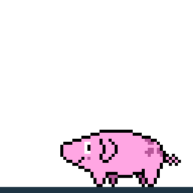
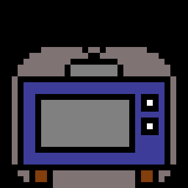
3D
Reels and course work.
Other Art
Illustration and Inktober work.
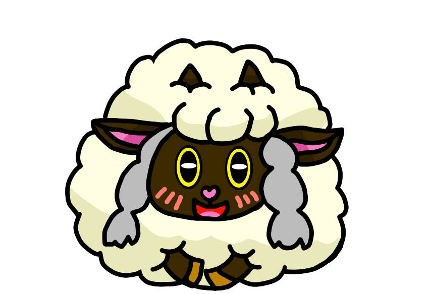
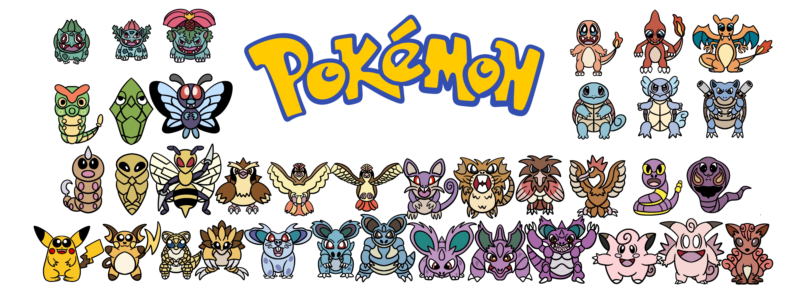
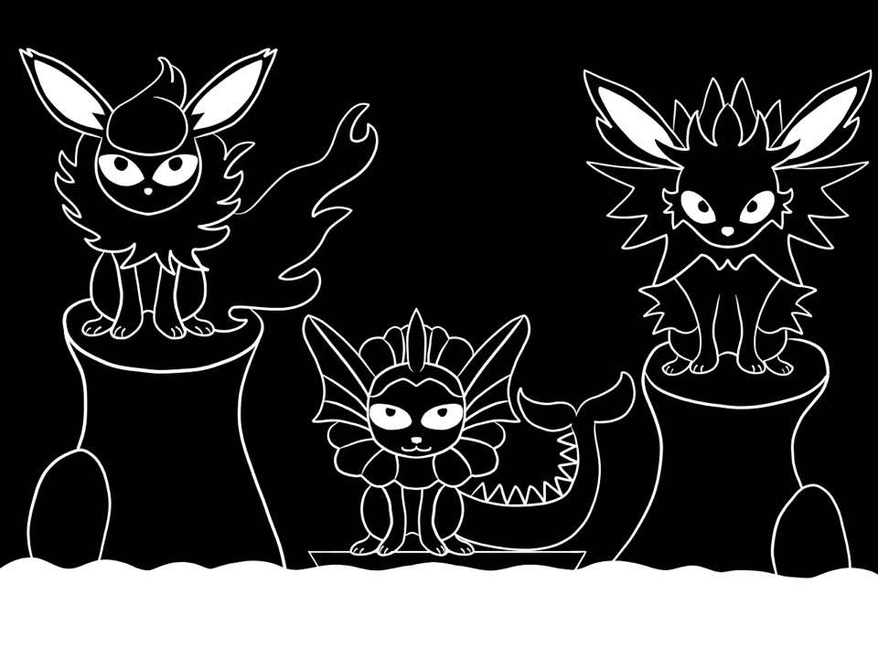
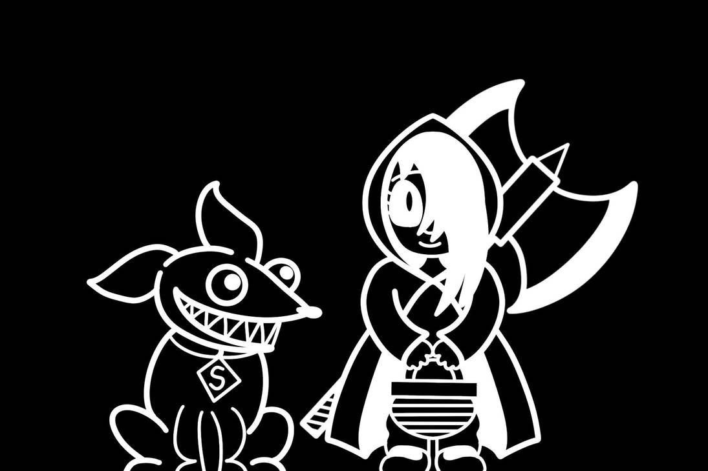
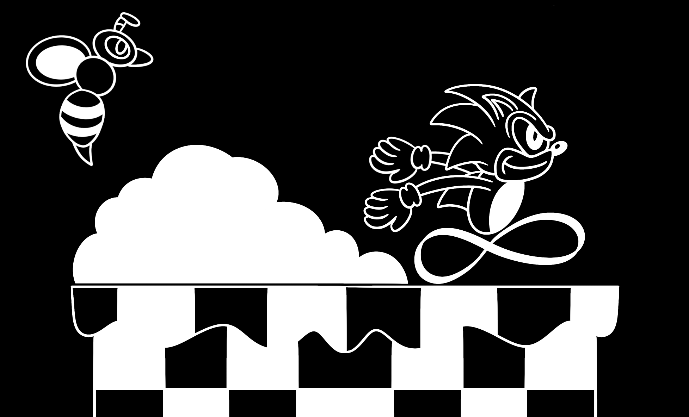